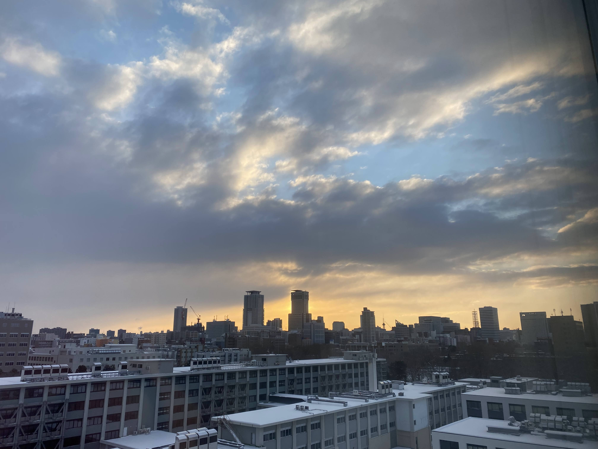
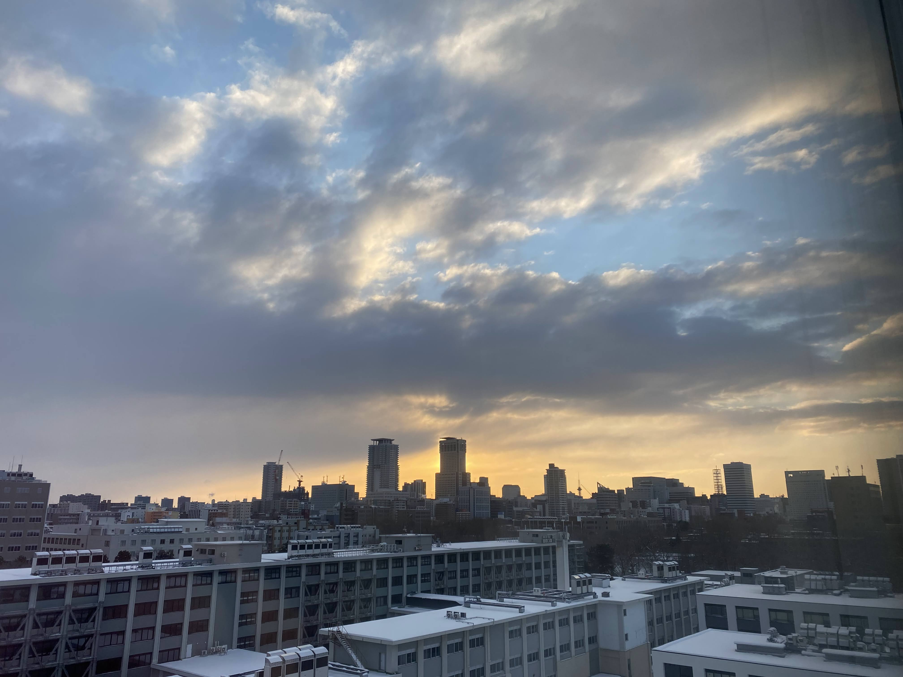
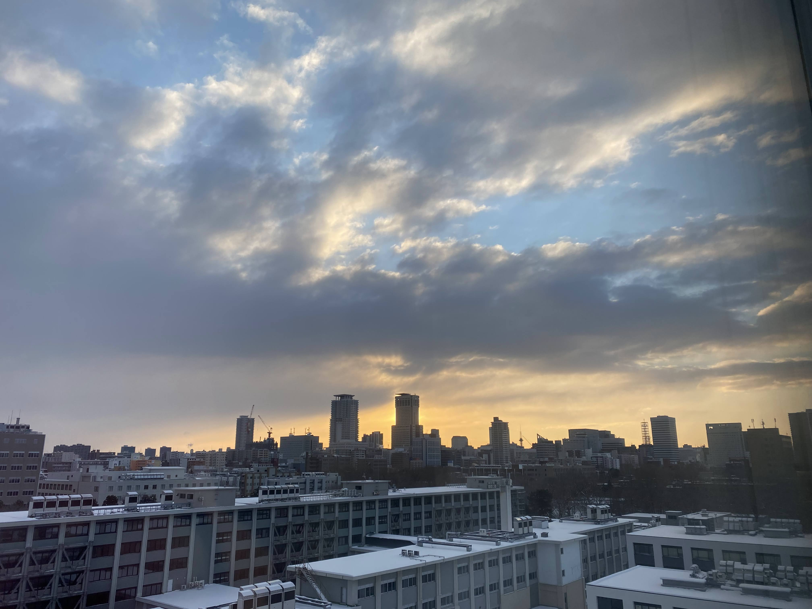

This page is currently not updated.Please visit here instead.
栗田 空知
e-mail: skthtu[at]eis[dot]hokudai[dot]ac[dot]jp
I am a senior student in computer science at Hokkaido University in Japan.
I'll do my best to update this website :-)
Hokkaido University, Hokkaido, Japan
April 2019 - Present
Senior student in computer science
not yet.
not yet.